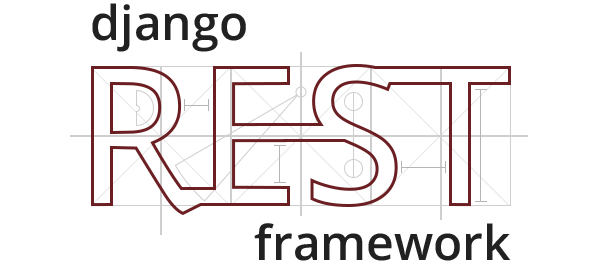
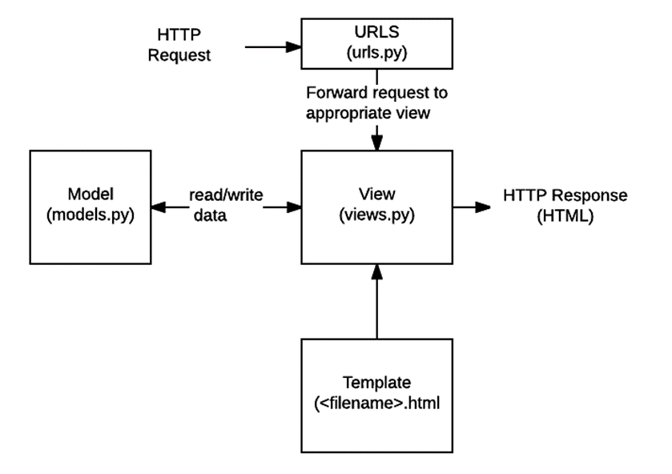
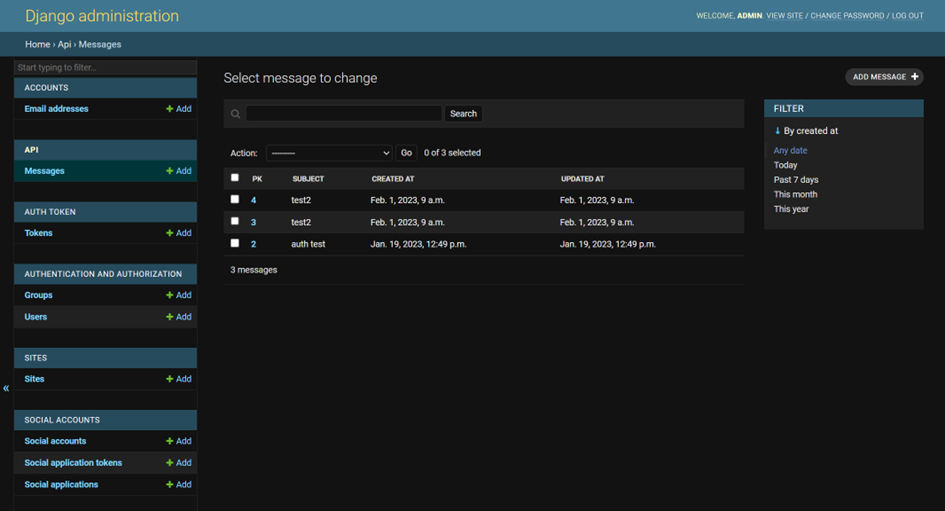
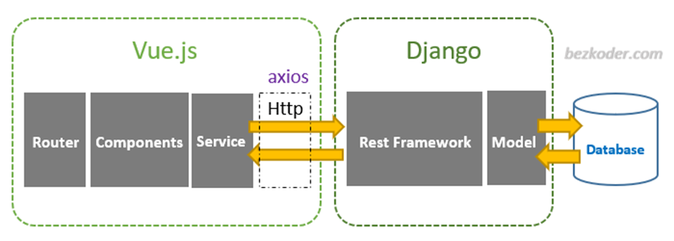
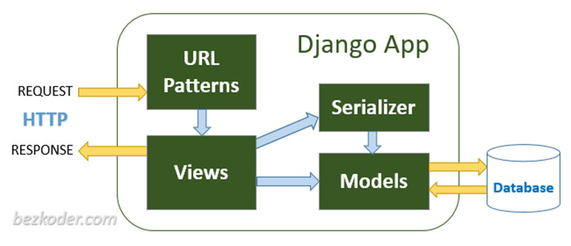
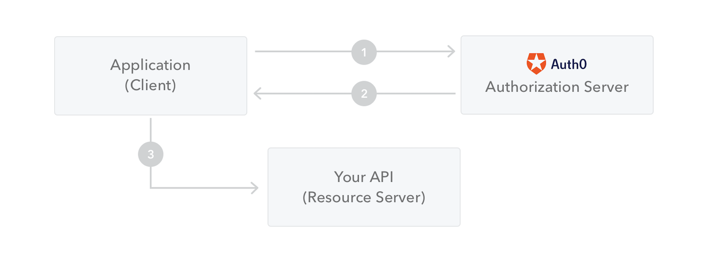
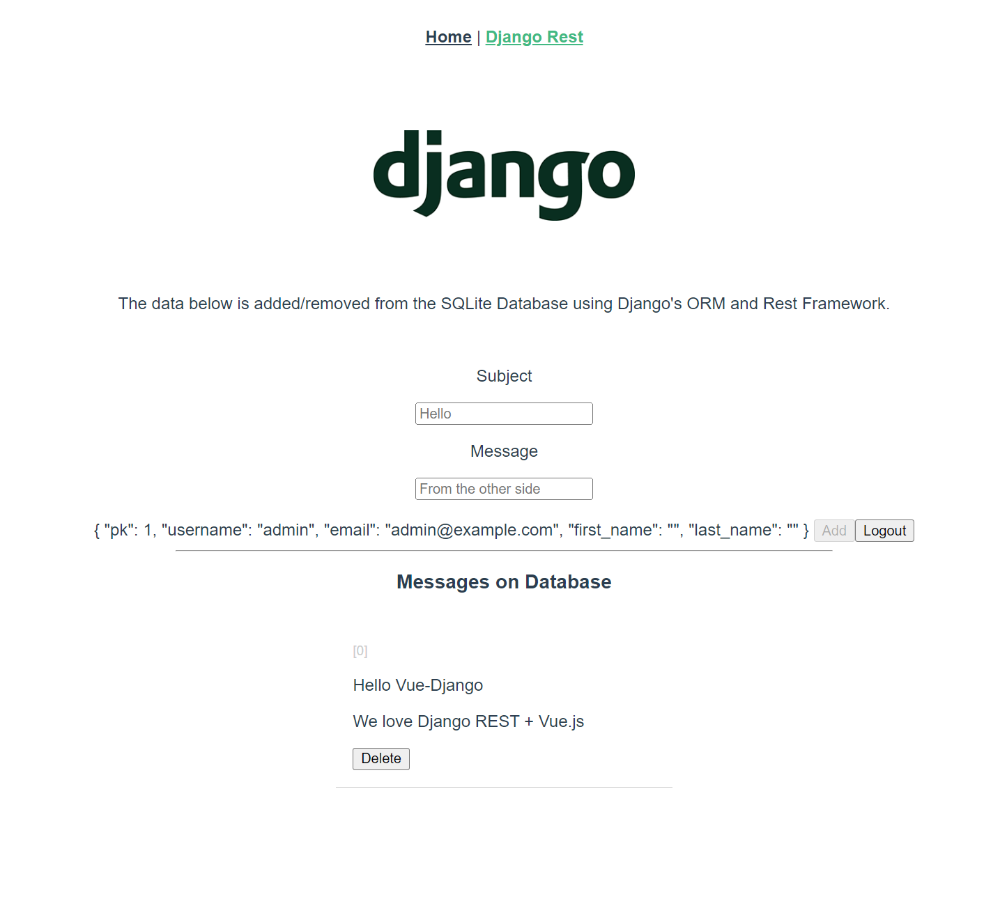

Last Updated: 2023-02-10
In this codelab, you'll learn the basics about Django and Django REST Framework.
After a short introduction, we provide a selection of link to the official tutorials. They are carefully picked to cover the required parts to understand the project steup used during this course. Therefore, they do not always start at the beginning and propose to skip some steps. Naturally, you are free to also look at the optional tutorials to further extend your understanding.
 |
Django is a high-level Python web framework that encourages rapid development and clean, pragmatic design. Built by experienced developers, it takes care of much of the hassle of web development, so you can focus on writing your app without needing to reinvent the wheel.
Django is "somewhat opinionated", and hence delivers the "best of both worlds". It provides a set of components to handle most web development tasks and one (or two) preferred ways to use them. However, Django's decoupled architecture means that you can usually pick and choose from a number of different options, or add support for completely new ones if desired.
Django web applications typically group the code that handles each of these steps into separate files:

One of the most powerful parts of Django is the automatic admin interface. It reads metadata from your models to provide a quick, model-centric interface where trusted users can manage content on your site.

In this course we want to separate the client and the backend. Therefore, we are not using the Views/Template part of Django and instead replace it with a RESTful API consumed by the frontend Single Page App written in Vue.js.

Source: https://www.bezkoder.com/django-vue-js-rest-framework/
Django REST framework (DRF) is a powerful and flexible toolkit for building Web APIs.
https://www.django-rest-framework.org/

Source: https://www.bezkoder.com/django-rest-api/
The following concepts should be understood to successfully implement the project. A tutorial is provided, but it is encouraged to further look into the documentation for more details.
We asume that you already have python3 >= 3.8 installed
If this is not the case you, can get the latest version of Python at https://www.python.org/downloads/ or with your operating system's package manager.
You then can install the latest version of Django with the following command:
python -m pip install Django
You are now all set to follow the tutorials.
Have fun learning Django!
You will learn your first management commands to create a project and start a server.
Do: https://docs.djangoproject.com/en/4.1/intro/tutorial01/
You will learn how to create models and apply them to the database via migrations.
Do: https://docs.djangoproject.com/en/4.1/intro/tutorial02/
In addition, you will discover the powerful Django Administration Interface
Basics :https://docs.djangoproject.com/en/4.1/intro/tutorial02/
To see more customization of the admin jump to:
Do: https://docs.djangoproject.com/en/4.1/intro/tutorial07/
The following concepts should be understood to successfully implement the project. A tutorial is provided, but it is encouraged to further look into the documentation for more details
Follow the very quick start:https://www.django-rest-framework.org/tutorial/quickstart/
Or follow the official tutorial starting here:https://www.django-rest-framework.org/tutorial/1-serialization/
You will learn how serializers allow to transform data from Complex Django ORM objects to JSON and back. The first step towards building an API.
Do: https://www.django-rest-framework.org/tutorial/1-serialization/
Following the official tutorial you will learn about basics elements to create your API. However, notice that there exits a simpler way to handle this: viewsets. They build upon these concepts, but simplify wastly the required written code. We will prefer viewsets for the project!
Do: https://www.django-rest-framework.org/tutorial/2-requests-and-responses/
Do: https://www.django-rest-framework.org/tutorial/3-class-based-views/
Building a writable API for the realworld requires to understand how to protect it.
Do: https://www.django-rest-framework.org/tutorial/4-authentication-and-permissions/
Using viewsets can be a really useful abstraction. It helps ensure that URL conventions will be consistent across your API, minimizes the amount of code you need to write, and allows you to concentrate on the interactions and representations your API provides rather than the specifics of the URL conf.
Do: https://www.django-rest-framework.org/tutorial/6-viewsets-and-routers/
Cross-Origin Resource Sharing (CORS) is an HTTP-header based mechanism that allows a server to indicate any origins (domain, scheme, or port) other than its own from which a browser should permit loading resources.
If this is not configured correctly on the server a browser will block request from a different domain or localhost of your JavaScript application.
JSON Web Token is an open industry standard used to share information between two entities, usually a client (like your app's frontend) and a server (your app's backend).
They contain JSON objects which have the information that needs to be shared. Each JWT is also signed using cryptography (hashing) to ensure that the JSON contents (also known as JWT claims) cannot be altered by the client or a malicious party.
With this we can have stateless API without needing sessions cookies. The Resource Server does not need to check back with the Authorization Server and can be a separate server.

Take a look (and try to run) the provided sample application integrating all the presented concept in one repository.
https://github.com/heg-interschool/django-vue-template
A simple Model of a message which can be edited only by an authenticated user
Includes:
